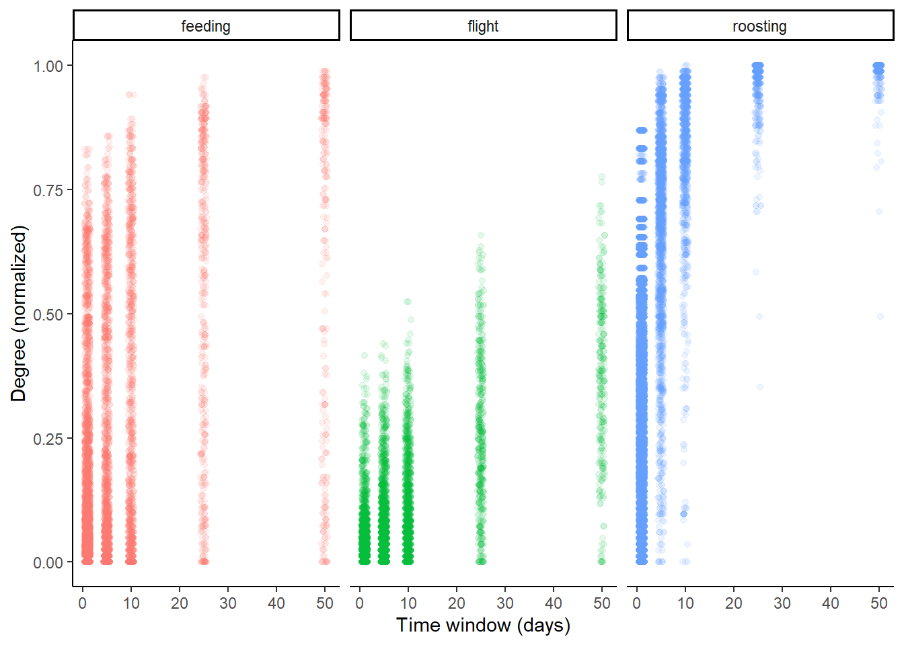
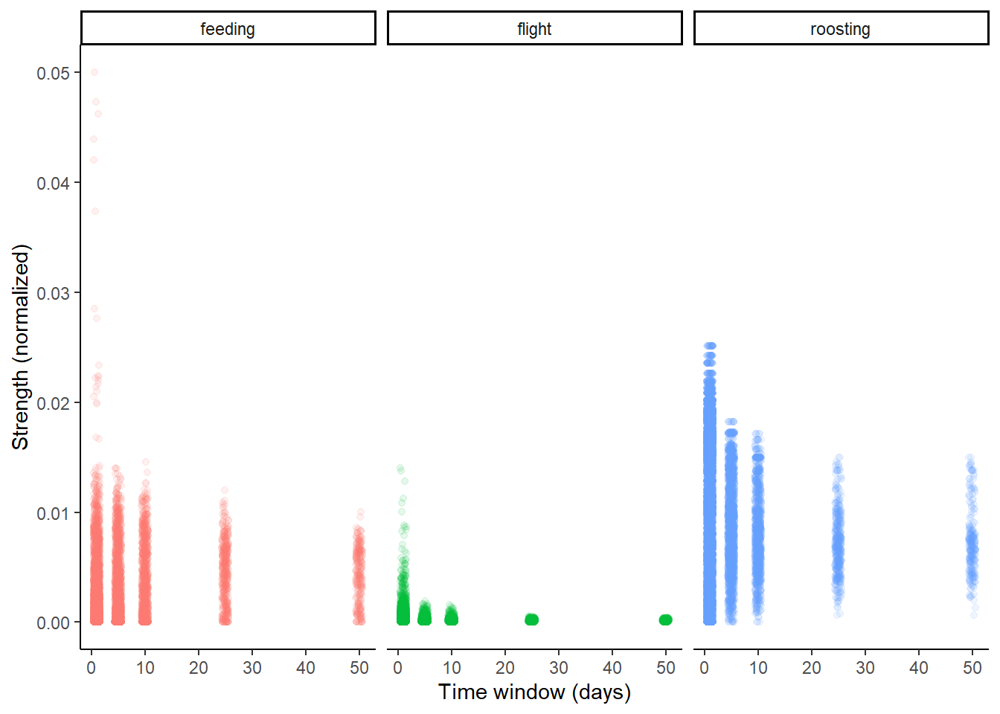
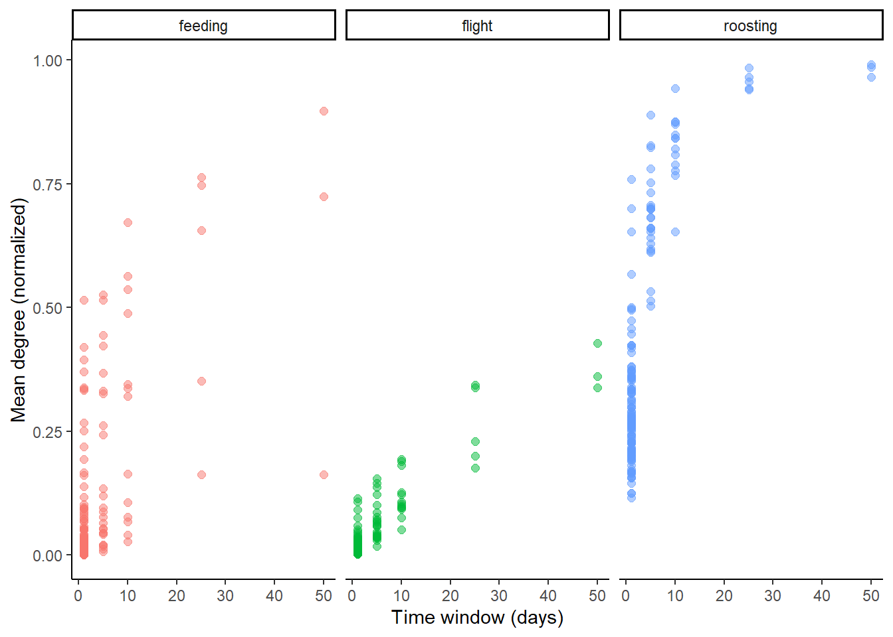
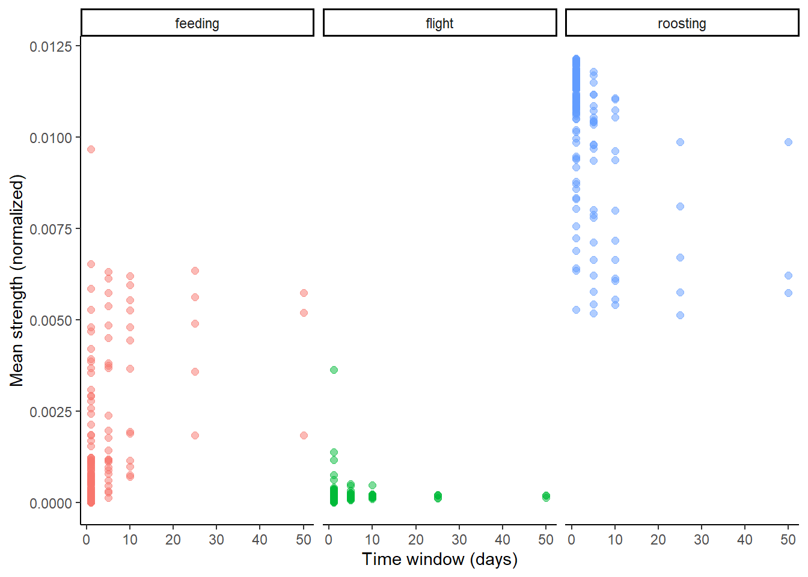
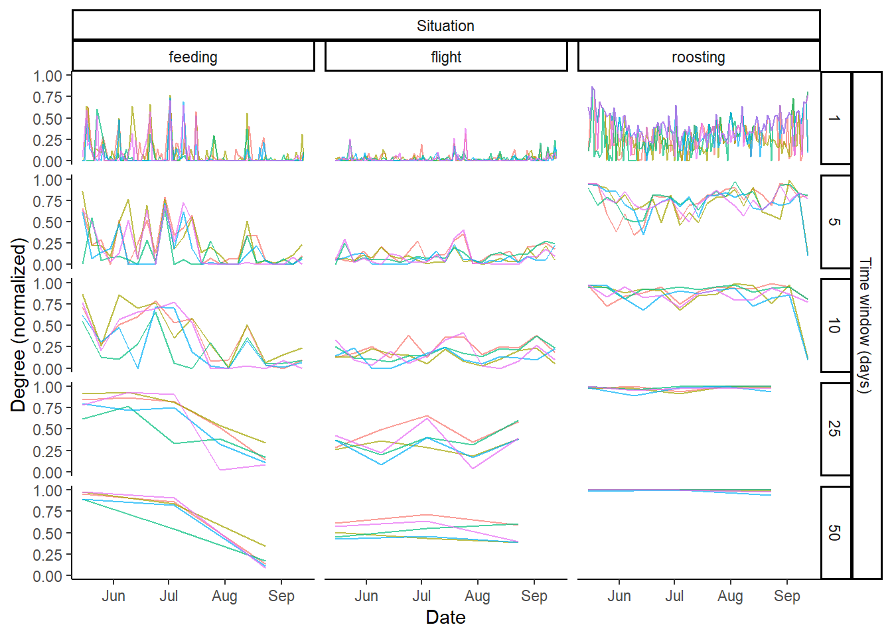
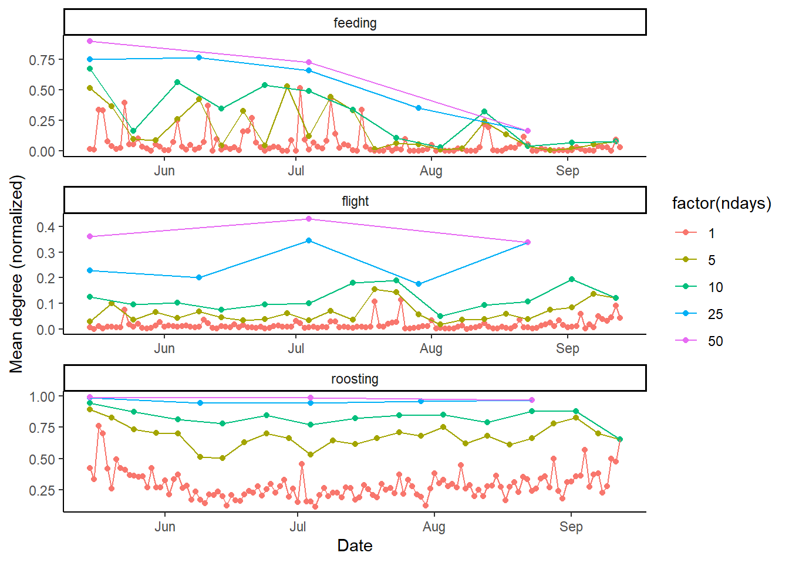
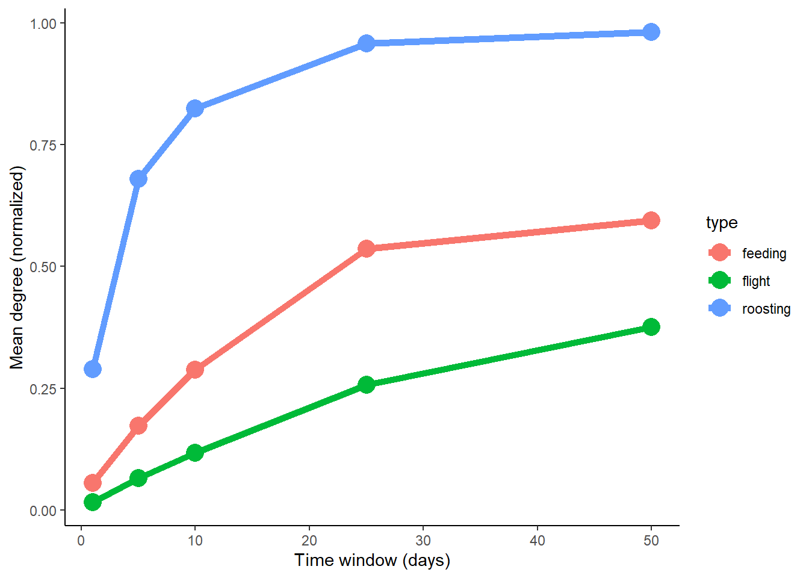

# Load data
load(here("data/fromMvmtSoc/downsampled_10min_forSocial.Rda")) # produced by the dataPrep script in MvmtSoc project
# Convert to SF
sfdata <- map(downsampled_10min_forSocial, ~st_as_sf(.x, coords = c("location_long", "location_lat"), crs = "WGS84", remove = F))
rm(downsampled_10min_forSocial)
# Put all the seasons together and remove the columns we don't need
sfdata <- purrr::list_rbind(sfdata) %>%
select(-c(tag_id, sensor_type_id, acceleration_raw_x, acceleration_raw_y, acceleration_raw_z, barometric_height, battery_charge_percent, battery_charging_current, external_temperature, gps_hdop, gps_satellite_count, gps_time_to_fix, import_marked_outlier, light_level, magnetic_field_raw_x, magnetic_field_raw_y, magnetic_field_raw_z, ornitela_transmission_protocol, tag_voltage, update_ts, visible, deployment_id, event_id, sensor_type, tag_local_identifier, location_long.1, location_lat.1, optional, sensor, earliest_date_born, exact_date_of_birth, group_id, individual_id, latest_date_born, local_identifier, marker_id, mates, mortality_date, mortality_latitude, mortality_type, nick_name, offspring, parents, ring_id, siblings, taxon_canonical_name, taxon_detail, number_of_events, number_of_deployments))
# For our own sanity, let's just work with a single season: summer 2023
summer23 <- sfdata %>%
filter(seasonUnique == "2023_summer")
save(summer23, file = here("data/summer23.Rda"))
rm(sfdata)temporal
Prepare a subset of data
Load the Summer 2023 data subset
Cut Summer 2023 into different time windows
Define the time windows
To test how the networks behave over different time intervals, we can prepare a subset of data (summer 2023) cut into different intervals. E.g. 1 day, 5 days, 10 days, 25 days, 50 days.
Now we we need to do the same cuts for the roost data.
Get flight, feeding, and roosting edges for each time window
I am using an unholy combination of for loops and purrr::map() here, because I find it easier to understand than nested map statements (and nested for loops are slower/not easy to parallelize). But they are doing the same thing.
Make the network graphs
Calculate individual-level metrics
In order to properly label the metrics in the data frame, we need to know which interval they’re associated with. Let’s retrieve the interval names from the original data.
Attach metrics to graphs
I’m going to use the structure called tbl_graph from the tidygraph package, because it makes attaching node or edge characteristics much easier than igraph (using the tidyverse framework).
Make some visualizations
Taking a look at some metrics: how does individual degree differ by time window?
metrics_indiv %>%
ggplot(aes(x = ndays, y = normDegree, col = type))+
geom_jitter(alpha = 0.1, width = 0.6)+
theme_classic()+
facet_wrap(~type)+
ylab("Degree (normalized)")+
xlab("Time window (days)")+
theme(legend.position = "none")+
NULL
What about individual normalized strength?
metrics_indiv %>%
ggplot(aes(x = ndays, y = normStrength, col = type))+
geom_jitter(alpha = 0.1, width = 0.6)+
theme_classic()+
facet_wrap(~type)+
ylab("Strength (normalized)")+
xlab("Time window (days)")+
theme(legend.position = "none")+
NULL
Okay interesting. What about mean degree or strength across the whole population? (We will still have different numbers of dots for each time window–maybe only one or two for the highest time window, and many for the 1-day window.
metrics_indiv %>%
group_by(type, ndays, int) %>%
summarize(mndeg = mean(normDegree)) %>%
ggplot(aes(x = ndays, y = mndeg, col = type))+
geom_point(alpha = 0.5, size = 2)+
theme_classic()+
facet_wrap(~type)+
ylab("Mean degree (normalized)")+
xlab("Time window (days)")+
theme(legend.position = "none")+
NULL`summarise()` has grouped output by 'type', 'ndays'. You can override using the
`.groups` argument.
metrics_indiv %>%
group_by(type, ndays, int) %>%
summarize(mnstr = mean(normStrength)) %>%
ggplot(aes(x = ndays, y = mnstr, col = type))+
geom_point(alpha = 0.5, size = 2)+
theme_classic()+
facet_wrap(~type)+
ylab("Mean strength (normalized)")+
xlab("Time window (days)")+
theme(legend.position = "none")+
NULL`summarise()` has grouped output by 'type', 'ndays'. You can override using the
`.groups` argument.
What about degree/strength per time period? Let’s look at how this changes for 5 random individuals in the population.
set.seed(3)
random_vultures <- sample(unique(metrics_indiv$Nili_id),
size = 5, replace = FALSE)
metrics_indiv <- metrics_indiv %>%
mutate(selected = ifelse(Nili_id %in% random_vultures, TRUE, FALSE))
metrics_indiv %>%
filter(selected == TRUE) %>%
ggplot(aes(x = lubridate::ymd(int), y = normDegree, group = interaction(Nili_id, type)))+
geom_line(aes(col = Nili_id), alpha = 0.7)+
#facet_grid(rows = vars(ndays), cols = vars(type))+
theme_classic()+
theme(legend.position = "none")+
ylab("Degree (normalized)")+
xlab("Date")+
ggh4x::facet_nested("Time window (days)" + ndays ~ "Situation" + type)+
theme()
This plot definitely suggests that we have different temporal scales going on!
How do network-level metrics change over time? (I have not calculated network-level metrics such as density and modularity yet–could go back and do that. For now, I’m going to use mean mean degree/mean mean strength as measures).

